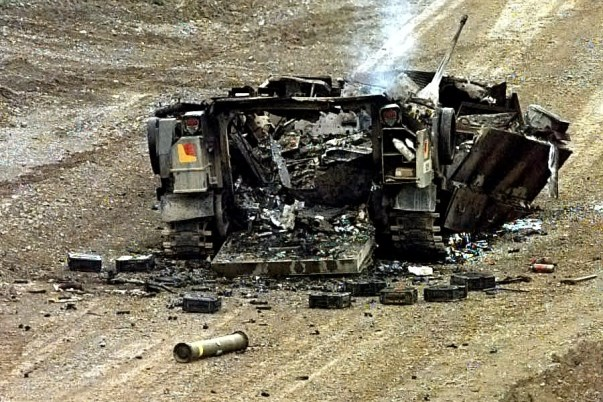

2015-08-08 00:05:00
我自己最早的記憶是六歲時的一幕，在那之前的童年都已忘得一乾二淨，所以後來有了小孩之後，觀察他的心理成長對我是一個全新的學習經驗。在閱讀一些參考書籍並和教育人員交流之後，大家的共識是一般小孩到兩歲左右才發展出人我之間的差別認知，所以美國人有所謂“Terrible Two's“（”恐怖的兩歲“）的說法，就是因為兩歲小孩什麼東西都說是”我的“，並且會因此而哭鬧不停。到了三歲，腦部才有了解（但還是不能分析）因果關係的基本概念，所以會開始到處問”為什麼“。但是因果分析及自制能力要到六歲才因前額葉（Frontal Lobe）的發展而開始有了雛形（但是要到20多歲才完全長成；情緒中心反而在青春期後來居上，主導了中學生的行為）；在此之前，小孩是不懂得要犧牲眼前所得以換取更大的長期利益的。所以我也就一直等到小孩六歲之後才跟他講理（並且教他數學），因為我知道在那之前是純粹浪費口舌。
扯了這麼遠，其實和今天的主題沒有關係；只是最近台灣的大新聞就是高中生反課綱活動，很多讀者一副心癢難搔的樣子，若不是我最近對離題的留言大力打壓，只怕人人都要往那個方向扯。為了一勞永逸，我在此澄清：是的，這是無知學生受野心政客鼓動，成為奪權造勢的打手，所用的藉口可笑至極。那麼為什麼我不想讓大家在留言欄討論呢？因為這些學生連“為什麼”都不知道問，他們的行為只有兩歲智商的水平；而這個部落格講究的是事實與邏輯，所以至少要六歲以上智商的行為才值得討論。在此請大家尊重規則，一同維護討論的水準，不要離題去談反課綱。
好，言歸正傳，我在前一篇文章的正文和留言欄裡提到，十年之後共軍的裝備將大致達到美軍的檔次，雙方將平分秋色、各擅勝場，結果有讀者反應說我的看法是“樂觀”的。當然熟悉我思考和寫作風格的人應該知道我做的結論都是以客觀事實經過嚴謹邏輯分析的結果，沒有主觀意見的餘地，否則我會明白標示為“猜測”。我想一般讀者對近年來各國的軍事發展不熟，所以不能看出這個實力消長的交叉點；既然我已經對共軍未來十年的發展做過多次詳細的討論，現在必須提供給讀者的就是有關美軍的資訊。美軍的裝備發展要比共軍公開得多了，這些資訊其實網絡上都很容易找得到；我在此之前一直沒有做系統性的介紹，是因為我對軍事問題的興趣不在這些細節上，而在於它們對戰略政略形勢的影響，即以前提過的”好讀書，不求甚解“。現在硬著頭皮寫簡介，歡迎讀者指正錯誤；不過我相信任何失誤都會是枝微末節，無關宏旨。某些大陸網友特別喜歡吹毛求疵，然後無限上綱，顛倒因果；希望不要在這裡看到這種非理性、反邏輯的論述。
我們從陸軍談起。美軍現有的M1坦克是1972年美德合作的MBT-70計劃拆夥之後開始研製的，1980年服役，原本其戰力相對蘇軍坦克並沒有完整的代差（尤其是T-80），一直到1986年升級為裝備了德國Rheinmetall為Leopard 2所開發的120毫米滑膛砲（美軍編號M256，其實德國人在1979年就做出來了）的M1A1，才能在1991年海灣戰爭中完勝伊拉克的T-72（1990年開戰前用特別預算將所有參戰的M1緊急升級為M1A1）。目前M1A1仍然是美國海軍陸戰隊的現役裝備，美國陸軍則使用小幅升級了防護能力的M1A2，當前兩者都沒有開發新坦克的計劃。即使美國在明年（可能性遠小於0.1%）就開始研發下一代坦克，至少也要14年（1986-1972=14；實際上近年來美國武器研發所需的時間和金錢都已成指數上漲）即2030年才能大功告成；而共軍最新的99式改型至少已經與M1A2相當（指其戰鬥性能；其重量輕了9噸，航程也較高，卻便宜很多，其實是更佳的產品），96A式的性能也與M1A1類似（其實重量輕了19噸，航程也較高，價錢更是白菜級的），下一代的兩人制坦克應該會在5-10年內開始量產，2025年時共軍將對美軍坦克形成代差優勢。
美軍現役的步兵戰車是M2 Bradley，在1981年開始服役，和M1一樣是超重而且極貴的產品，但是M1至少在性能上還算是先進的武器，M2卻因為大量使用了鋁合金裝甲來減重，有非常不幸的易燃特性，國際上一般認為它是一個完全失敗的產品，外銷客戶只有一個，即財大氣粗又必須給美國人面子的沙烏地阿拉伯。共軍最新的ZBD-04A（參見前文《又見朱日和》）技術指標與其相似，但是在火力、機動力和防護力等三項主要戰鬥性能上都略勝半籌。與坦克同樣，美軍完全沒有研發新型步兵戰車的計劃，所以共軍的優勢在未來十年只會越來越大。

被撃中後引發大火燒成廢料的M2A2。
美軍和國軍現役的自走榴彈砲都是1963年開始服役的M109。因為它使用的火砲年代過於久遠，沒有採用Bull博士發明的ERFB（Extended Range，Full Bore）技術，所以在射程和精度上和現代火砲完全無法相比，現在歐洲國家都早已換裝德製的PzH-2000或英製的AS-90。美國陸軍在1995年也開始研發替代用的XM-2001，結果因為嚴重超支、嚴重超重和嚴重落後進度而在2002年（讀者可以猜猜看XM-2001原定在哪一年服役）被砍掉。同年美國陸軍宣布開始研發“未來戰鬥系統”（Future Combat System，FCS），其中包括新式的坦克、步兵戰車和自走榴彈砲，結果同樣在7年後的2009年因為嚴重超支、嚴重超重和嚴重落後進度而被砍掉，從此陸軍不敢再要求為裝甲車輛換代。共軍現役的PLZ-05已經比M109先進一代；據稱更新一代的底盤、自動裝彈機和電子系統都已開發完成，那麼共軍換裝就只是時間問題。
以上提及的美軍現役作戰車輛都是30年以上的老古董，而且換代的計劃已經屢次因為美國軍工企業無法在合理的時間、價錢和重量範圍內完成性能達標的產品而絕望，那麼美國陸軍有沒有新式的現代重裝備呢？有的，那就是2002年開始服役的八輪M1126 Stryker步兵攻擊車（Infantry Assault Vehicle，IAV），在阿富汗和伊拉克都相當成功，廣受美軍士兵喜愛，共部署了4400多輛。可是Stryker其實是加拿大製的，加拿大自己的編號是LAV III，1991年開始研發，1995年服役。為什麼加拿大人只花了四年就開發完成呢？因為他們其實只從瑞士的MOWAG公司買了Piranha III的設計，稍微修改了一點，換上自己的型號而已。換句話說，美軍現役唯一的新式裝甲車是歐洲20多年前的設計，由加拿大代工生產，所以才沒有超支、超重和落後進度的問題。共軍的八輪裝甲車當然是自己研發的，性能與Stryker相當，價錢卻絕對不到其（500萬美金）1/3，所以一樣也已大量部署。
為什麼美國陸軍和海軍陸戰隊威名顯赫，其重裝備卻可以如此不堪？這除了美國的宣傳戰力之外，還有兩個原因：首先美國人只挑中東的三流對手打陸戰，連軍工發展已經遲滯25年的俄國這樣的二流陸軍佔領Crimea後都不敢有所反應；其次現代美軍的標準陸戰戰術是以坦克前進到與敵人接觸之後，稍作後退，等待步兵並呼叫空軍飛機或陸軍自己的直升機來把敵方防線炸個稀巴爛（亦即“空地一體戰”，參見前文《當代美國戰略局勢與策略》），所以坦克首重防護力，IAV首重機動性，砲兵（包括火箭砲）可有可無，現有的裝備因此基本夠用。
所以美國最重要的陸軍武器其實是直升機，在這方面他也的確領先世界，其代表之作就是國軍也有的Apache。不過我們退一步研究一下就會發現Apache是在1986年開始服役的，比它稍晚的Comanche計劃從1982年開始，到2004年終於被砍，原因大家現在應該可以猜得出：嚴重超支、嚴重超重和嚴重落後進度（所謂無人機可以取代直升機是個吃不到葡萄說葡萄酸的下台階；君不見Apache的新型號仍然層出不窮？Comanche並不是超輕型偵察直升機，而是隱身的偵察兼攻擊直升機，稍為放大就可以為Apache換代）。而這個29年舊的Apache直升機的價錢也在近年經歷了指數上升，2010年給印度的報價單（參見美國官方文件http://www.dsca.mil/major-arms-sales/india-support-direct-commercial-sale-ah-64d-block-iii-apache-helicopters；國軍的價錢是絕對機密，但是只會高不會低）已經達到14億美元只買22架AH-64D Block III（後來改名為AH-64E），也就是6400萬美元一架。共軍的WZ-10在電子、結構和武器上都已與Apache同級（但是價錢必定低了幾倍），真正的差別只在引擎上；中國已有多型渦軸引擎在開發之中，五年之內就應該能趕上AH-64E所用的T700-701D的1487KW。此外我以前已經提過，直升機只有在己方擁有空優的前提下才有意義，台海戰爭中的空優誰屬我在下文再為大家細數。